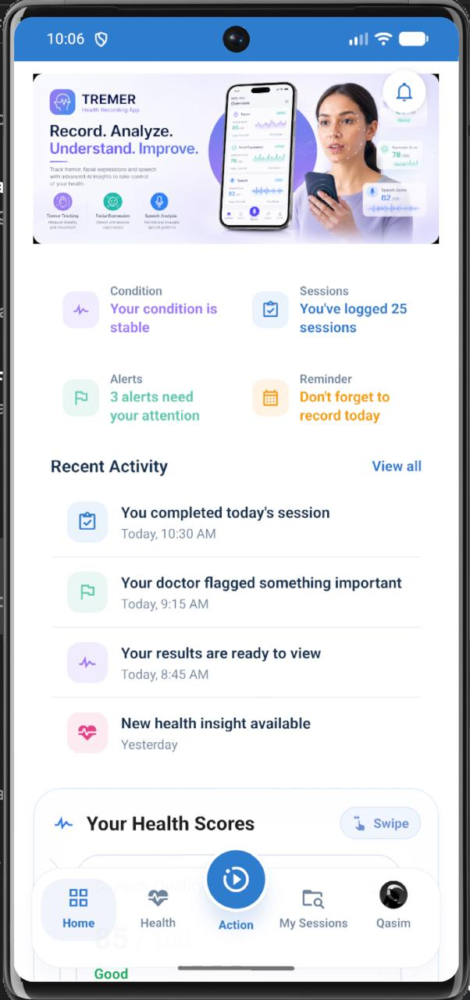
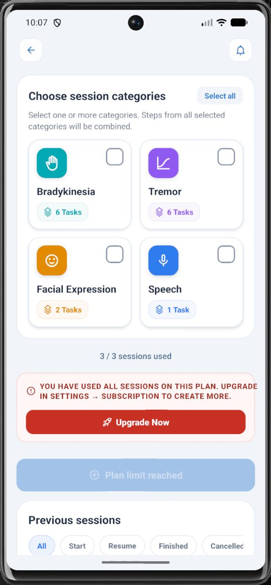
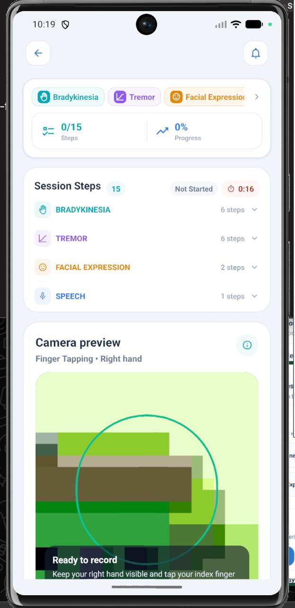
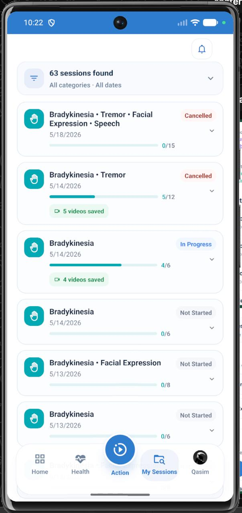
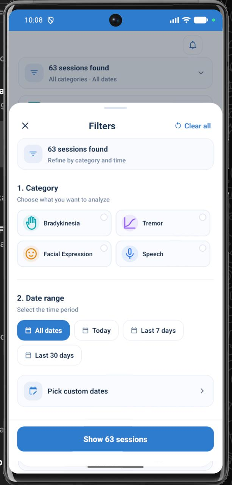

Tremer helps people living with Parkinson's Disease track tremor, movement, facial expressions and speech — using a smartphone camera and AI to turn everyday recordings into clinical-grade insight.

Parkinson's Disease (PD) is a progressive neurological condition that gradually changes the way a person moves, speaks and expresses themselves. Today, those changes are usually measured only during short clinic visits — a tiny window into a 24-hour life. Tremer closes that gap. By turning any smartphone into a clinically useful recording tool, Tremer lets patients capture how they actually feel and move at home, every day. A computer-vision library identifies the user's motion, and an AI model converts the recording into structured, comparable results that both patients and clinicians can act on.
Four simple steps. The patient records — the AI does the rest.
Pick one or more assessment types — Bradykinesia, Tremor, Facial Expression, or Speech — and tasks are combined into a single session.
Optionally log medication, wellbeing, intake and symptoms so results can be interpreted in context.
Patients perform guided tasks on screen. The device camera captures motion, expression, and audio.
A computer-vision library identifies the user's motion, and an AI model turns it into structured clinical results.
Tremer is built around the moments that matter most in a person's PD journey — at home, in the clinic, and in between.
The patient records a short session from the comfort of their living room. No clinic visit, no equipment — just the phone they already carry.
Record sessions while ON, OFF or wearing off medication. Patients and doctors can see exactly how dosing changes affect symptoms over the day.
Arrive at every appointment with weeks of objective data already collected — so the conversation focuses on treatment, not recollection.
Each session contributes to a long-term trend line, helping detect subtle worsening that a single clinic visit can easily miss.
Specialists can review real, time-stamped recordings before or during a tele-consult — no waiting for the patient to "show" a tremor on a video call.
Caregivers gain a clearer picture of how their loved one is really doing on any given day — beyond a worried phone call.
Aggregated, structured recordings can power studies on treatment efficacy, disease progression and digital biomarkers.
Clinicians can flag concerning sessions directly into the patient's feed, enabling earlier follow-up rather than waiting for the next visit.
Parkinson's care has historically depended on short, subjective in-clinic exams. Tremer brings continuous, objective data into the picture — benefiting both the healthcare system and the people it serves.
Each category groups together a set of guided tasks. Tasks from selected categories are merged into one continuous, seamless session.
Measures slowness and reduced amplitude of movement through finger-tapping and hand-motion tasks — a core symptom of PD.
6 tasksCaptures resting, postural and action tremor using camera-based motion tracking, with no wearables required.
6 tasksDetects hypomimia — the reduced facial movement common in PD — through guided expression prompts and face-landmark analysis.
2 tasksRecords and analyses speech samples for volume, clarity, rhythm and articulation — early indicators of PD progression.
1 taskEvery feature in Tremer is built around one goal: making it effortless for patients to record, and meaningful for clinicians to review.
At a glance: condition status, total sessions logged, alerts that need attention, and reminders to record today. The patient always knows where they stand.
Select one or several categories at once. All tasks are combined into a single guided flow — no repeat setups, no fragmented data.
Optional logs for medication state (ON / OFF / wearing off), wellbeing, intake and symptoms enrich every result with vital context.
Live camera preview with on-screen guidance — "keep your right hand visible and tap your index finger" — ensures clean, analysable captures every time.
A computer-vision library identifies hand, face and audio landmarks in real time. An AI model then scores key clinical metrics for the chosen category.
Browse dozens of sessions with filters by category and date. Resume in-progress sessions or revisit finished ones anytime.
Doctors can flag concerning findings directly into the patient's activity feed, enabling faster follow-up and earlier intervention.
Each session contributes to a swipeable health-score view, so progress and trends — both improvements and regressions — show clearly.
Full English & Arabic interface with one-tap switching, making the app accessible to a broader patient base.
Patients receive a transparent monthly session quota with an in-app upgrade path when more capacity is needed.
Sessions, videos and results are stored server-side — patients and clinicians always see the latest data on any device.
Every assessment saves the original video. Clinicians can replay, second-opinion or re-analyse any session at any time.
Real screens, captured from the live app.
The home screen is the patient's daily anchor. It opens with the Tremer hero, then surfaces the most important information in four glanceable cards: current condition, total sessions logged, open alerts, and the daily record reminder.
From a single screen the patient can choose any combination of Bradykinesia, Tremor, Facial Expression and Speech. Tasks across selected categories are merged into one continuous session, removing repetitive setup.

The recording screen brings everything the patient needs into one calm view: selected categories at the top, a progress and timer card, the full step list, and a live camera preview with the current task guidance.

The My Sessions screen turns every past assessment into a browsable, filterable history. Patients can resume in-progress sessions, revisit completed ones, or quickly find a specific date.

The filters sheet slides up over the sessions list and lets the patient narrow results in two simple steps: choose categories, then choose a time range. Results update instantly.

A smartphone is all the patient needs. Behind the scenes, a motion-tracking library and a purpose-built AI model do the heavy lifting.
Runs on both iOS and Android — every patient can take part using the device they already own.
A computer-vision library identifies hands, face landmarks and audio cues in real time during the recording.
Each recording is passed to an AI model that scores key clinical metrics for the chosen category.
Sessions, videos and results are stored server-side, so patients and clinicians always see the latest data on any device.
Tremer turns one of the most challenging diseases to track into something measurable, shareable and actionable — for patients, families and clinicians.